01: Fits¶
import SMEFT19
import numpy as np
import matplotlib.pyplot as plt
import pandas as pd
Scenario I¶
Fit only to C, beta_l and beta_q
def fit(x):
return -SMEFT19.likelihood_global(x, SMEFT19.scenarios.rotBI)
bf, v, d, L = SMEFT19.ellipse.minimum(fit, [-0.117, 0, 0.751])
Minimizing...
Pull: 5.746240246765453 sigma
bf
array([-1.30752715e-01, 2.34088301e-13, 8.46128470e-01])
-2*L
40.317588906941886
SMEFT19.ellipse.save(bf, v, d, L, '../../ellipses/rotBI.yaml', name='Mass Rotation fit, Scenario I',
fit='rotBI')
Confidence intervals scenario I¶
dchi = SMEFT19.SMEFTglob.smelli.flavio.statistics.functions.delta_chi2(1,3)
dchi
3.5267403802617303
delta_C = []
for err in np.linspace(-0.10, 0.10, 20):
delta_C.append(fit(np.array(bf) + np.array([err,0,0]))-L)
plt.plot(np.linspace(-0.10, 0.10, 20), delta_C)
plt.plot([-0.1, 0.1], [dchi,dchi])
[]
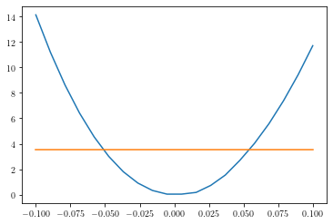
Error in C: \(\pm 0.05\)
delta_bl = []
for err in np.linspace(-0.1, 0.1, 20):
delta_bl.append(fit(np.array(bf) - np.array([0,err,0]))-L)
plt.plot(np.linspace(-0.1, 0.1, 20), delta_bl)
plt.plot([-0.1, 0.1], [dchi, dchi])
[]
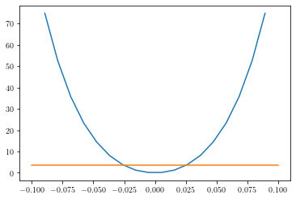
Error in \(\beta^\ell\): \(\pm 0.025\)
delta_bq = []
for err in np.linspace(-2.0, 2.0, 20):
delta_bq.append(fit(np.array(bf) + np.array([0,0,err]))-L)
plt.plot(np.linspace(-2, 2, 20), delta_bq)
plt.plot([-2, 2], [dchi, dchi])
plt.xlim([-1,2])
(-1.0, 2.0)
Error in \(\beta^q\): \({}^{+2.0}_{-0.5}\)
Scenario II¶
Fit to all parameters
def fit2(x):
return -SMEFT19.likelihood_global(x, SMEFT19.scenarios.rotBII)
bf2, v2, d2, L2 = SMEFT19.ellipse.minimum(fit2, [-0.12, 0.07, 0, -0.076, 0.803])
Minimizing...
Pull: 6.573827298782075 sigma
bf2
array([-1.34958386e-01, 6.97193846e-02, 1.15553399e-08, -5.18055430e-02,
7.29542188e-01])
-2*L2
57.06479239267408
SMEFT19.ellipse.save(bf2, v2, d2, L2, '../../ellipses/rotBII.yaml', name='Mass Rotation fit, Scenario II',
fit='rotBII')
Confidence intervals scenario II¶
dchi = SMEFT19.SMEFTglob.smelli.flavio.statistics.functions.delta_chi2(1,5)
dchi
5.887595445915204
delta_C = []
for err in np.linspace(-0.10, 0.10, 20):
delta_C.append(fit2(np.array(bf2) + np.array([err,0,0,0,0]))-L)
plt.plot(np.linspace(-0.10, 0.10, 20), delta_C)
plt.plot([-0.1, 0.1], [dchi, dchi])
[]
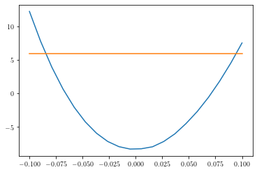
Error in C: \(\pm 0.08\)
delta_al = []
for err in np.linspace(-0.07, 0.07, 20):
delta_al.append(fit2(np.array(bf2) + np.array([0,err,0,0,0]))-L)
plt.plot(np.linspace(-0.07, 0.07, 20), delta_al)
plt.plot([-0.07, 0.07], [dchi, dchi])
[]
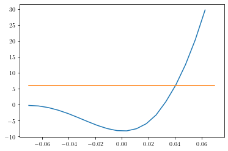
Error in \(\alpha^\ell\): \({}_{-0.07}^{+0.04}\)
delta_bl = []
for err in np.linspace(-0.06, 0.06, 20):
delta_bl.append(fit2(np.array(bf2) - np.array([0,0,err,0,0]))-L)
plt.plot(np.linspace(-0.06, 0.06, 20), delta_bl)
plt.plot([-0.06, 0.06], [dchi, dchi])
plt.xlim([-0.04, 0.04])
plt.ylim([-10, 80])
(-10.0, 80.0)
Error in \(\beta^\ell\): \(\pm0.025\)
delta_aq = []
for err in np.linspace(-0.15, 0.07, 20):
delta_aq.append(fit2(np.array(bf2) - np.array([0,0,0,err,0]))-L)
plt.plot(np.linspace(-0.15, 0.07, 20), delta_aq)
plt.plot([-0.15, 0.07], [dchi, dchi])
plt.xlim([-0.12, 0.07])
(-0.12, 0.07)
Error in \(\alpha^q\): \({}_{-0.07}^{+0.12}\)
delta_bq = []
for err in np.linspace(-0.7, 2.8, 20):
delta_bq.append(fit2(np.array(bf2) + np.array([0,0,0,0,err]))-L)
plt.plot(np.linspace(-0.7, 2.8, 20), delta_bq)
plt.plot([-0.7,2.8], [dchi, dchi])
[]
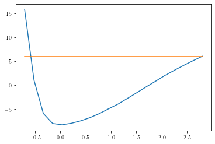
Error in \(\beta^q\): \({}^{+2.8}_{-0.6}\)
Observable Pulls¶
SMEFT19.comparepulls.compare(SMEFT19.scenarios.rotBII, '../../ellipses/rotBII.yaml', '../../TeX/pullsBII')
SMEFT19.plots.compare_plot(SMEFT19.scenarios.rotBII, '../../ellipses/rotBII.yaml', '../../plots/rotBII', 1.5)
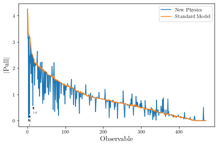
evo = [0]*5
ranges = [[-0.08, 0.08], [-0.18, 0.07], [-0.025, 0.025], [-0.07, 0.12], [-0.6,2.8]]
labels = [r'$C$', r'$\alpha^\ell$', r'$\beta^\ell$', r'$\alpha^q$', r'$\beta^q$']
labelsplain = ['C', 'alphal', 'betal', 'alphaq', 'betaq']
fits = ['RK', 'RD', 'LFV', 'global']
fitcodes = {'RK':'likelihood_lfu_fcnc.yaml', 'RD':'likelihood_rd_rds.yaml',
'LFV':'likelihood_lfv.yaml', 'global':'global'}
fitlabels = {'RK':r'$R_{K^{(*)}}$', 'RD':r'$R_{D^{(*)}}$', 'LFV':'LFV', 'global':'Global'}
fitcolors = {'RK':(0.8941176470588236, 0.10196078431372549, 0.10980392156862745),
'RD':(0.21568627450980393, 0.49411764705882355, 0.7215686274509804),
'LFV':(0.30196078431372547, 0.6862745098039216, 0.2901960784313726),
'global':(1.0, 0.4980392156862745, 0.0)}
for i in range(1):
xvalues = bf2[i] + np.linspace(ranges[i][0], ranges[i][1], 200)
evoi = []
for x in xvalues:
bfx = bf2.copy()
bfx[i] = x
evoi.append(SMEFT19.likelihood_fits(bfx, SMEFT19.scenarios.rotBII))
evo[i] = evoi
for i in range(0,5):
xvalues = bf2[i] + np.linspace(ranges[i][0], ranges[i][1], 200)
fig = plt.figure()
for f in fits:
plt.plot(xvalues, -pd.DataFrame(evo[i])[fitcodes[f]], lw=1.5, label=fitlabels[f], color=fitcolors[f])
plt.ylim([-40,40])
plt.xlim([bf2[i]+ranges[i][0], bf2[i]+ranges[i][1]])
plt.legend(fontsize=16)
plt.xlabel(labels[i], fontsize=20)
plt.ylabel(r'$\Delta \log L$', fontsize=20)
plt.tight_layout(pad=0.5)
fig.savefig(f'../../plots/evoplot_{labelsplain[i]}.pdf')
fig.savefig(f'../../plots/evoplot_{labelsplain[i]}.pgf')
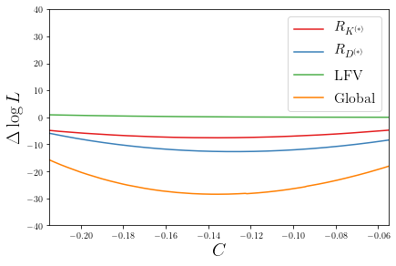
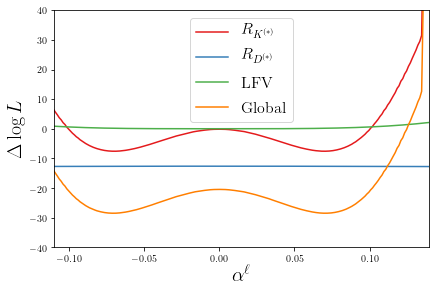
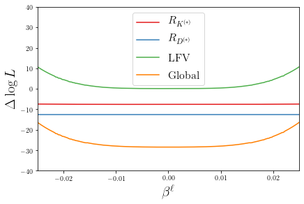
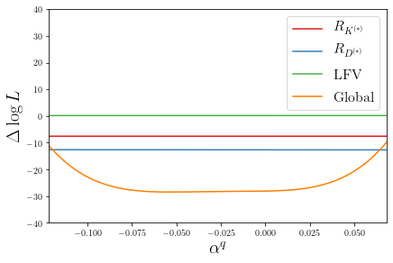
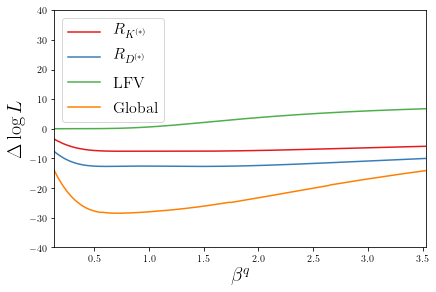